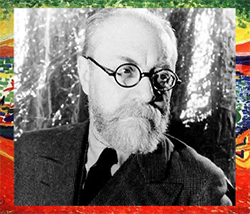

ARTISTAS
Henri Matisse
(Cateau Cambrésis, 1869 - Niza, 1954)
Pintor francés y máximo representante del Fauvismo. Comenzó en 1889, luego de que su madre le entregara materiales para el dibujo y pintura. En 1892 se marchó a París y se licenció en Derecho, llegando a trabajar como abogado, aunque en 1889 le entró la fiebre de estudiar en la Escuela de Bellas Artes de París. Su éxito comienza a partir de la exposición del Salón de la Sociedad de Artistas Independientes en París; donde se supuso su consagración como pintor y cabeza visible del movimiento.
Los lienzos de Matisse se presentaban de gesto espontáneo y color puro, basado en el nuevo estilo pictórico lleno de vigor expresivo y opuestas a la mera imitación de la naturaleza. En sus obras se destacaba el lujo, calma y voluptuosidad, acompañadas de gruesas y cortas pinceladas de intenso color. También la influencia de la escultura africana y otras culturas primitivas fueron denominadores para el pintor. Junto con Derain y Vlaminck eran denominados como fauves (sakvajes).
En 1908, ilusionado por transmitir sus ideas a los artistas más jóvenes, abrió una academia que sólo mantendría hasta 1911 y realizó su primera exposición individual en Nueva York.
Sobre los años 20 el artista se serena un poco y comienza a tender a la sensualidad, el ornamento y la tradición. Matisse tenía una debilidad hacia las mujeres, aunque prefería observar y canalizar su pasión en el arte.
André Derain
(Chatou, 1880 - Garches, 1954)
Fue escultor, ilustrador, escenógrafo y pintor francés. Hijo de un pastelero, Derain abandonó la ingeniería por la pintura. A diferencia de los otros fauvistas que les interesaba únicamente el color, Derain usaba la forma a través del color, pero ante todo era un artista libre, por lo que tanteó muchas más corrientes pictóricas, incluida las tradicionales.
Nutría su inspiración en la naturaleza y en el arte de viejos artistas, sus paisajes tenían colores radicales y sus dibujos fueron haciéndose más precisos y los volúmenes más concentrados, a la vez que el color perdía la vivacidad del periodo fauvista.
En los años 20 abandona las vanguardias y se decanta por un tiempo de la pintura tradicional y se convierte en uno de los artistas de vanguardia del París previo a la Gran Guerra. Paradójicamente, los nazis admiraban su obra y tras la guerra esto perjudicará para siempre su imagen. Fue incluso acusado de colaboracionismo.Llegó a ser un pintor de gran éxito, admirado por grandes artistas. Poseía una gran inteligencia y cultura. Trataba géneros como el histórico, el bodegón y el retrato, aunque se destacaban sus paisajes de composiciones y cromatismos inigualables para la época.
Maurice De Vlaminck
(París, 1876 - Rueil-la-Gadelière, 1958)
Formado como músico, se inició en la pintura estudiando obras expuestas y en las galerías de la calle. No tenía intención de dedicarse a la pintura, pero como otros artistas, tras una enfermedad, Vlaminck abandona el ciclismo profesional y al conocer a Derain se convence de su futuro en el arte. Hasta acercarse a la obra de Van Gogh que le influirá sobre todo en su colorido.
Rebelde y contestatario, utilizaba la sensualidad del color de Matisse como un arma que arrojar contra la tradición. De carácter apasionado, la arrogancia le llevaba a repudiar los museos y a extraer del color toda la fuerza expresiva. Sus paisajes son productos surgidos de la pasión, el color es liberación espontánea de lo instintivo, el lienzo un lugar donde verter sus emociones.
Su temperamento queda registrado en la tela por una pincelada nerviosa y unos empastes densos que potencian la agresividad cromática y la viveza expresivaque presagian el expresionismo. Básicamente paisajista, realizó también bodegones, cuadros de flores y algunos retratos.